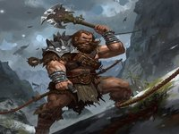
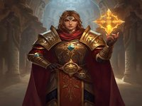
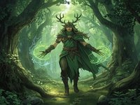
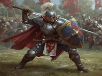
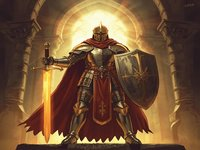
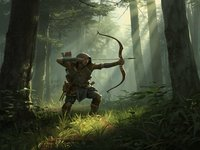
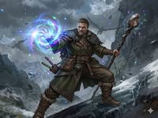
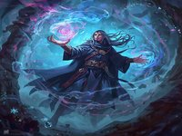

How it began
I love Dungeons and Dragons. I have played D&D on and off for almost 10 years. I first started with a small group of friends playing in highschool. Many campaigns and Characters later I still love every facet of this game. D&D is at its core about making a story. One person who is designated the Dungeon master makes a setting weather thats a mysterious cave, a cozy village or a vast world, and fill it with monsters mystery and Non Player Characters. Players make their own character that they will role play as. Together the Dungeon Master and the Players make a story. Players choose actions and if they choose somthing that requires skill like hitting a monster they roll dice to determine if they fail or succeed.
Duneons & Dragons Classes
| Picture | Class | Summary | Ranking | Source |
|---|---|---|---|---|
 |
Barbarian | Barbarians are the raging tanks of the battlefield. They lead the charge and take lots of hits.Barbarian is a strength based class. Its main stats are strength and constitution. Barbarian use the rage skill to negate damage and hit harder | B | D&D Beyond Barbarian |
| Bard | Bards are a spell casting class that channels magic by performing music or telling great tales. Their main stat is Charisma. Bards can do a bit of everything. This is an excelent class for seasoned players who are okay with managing lots of skills and modifiers | S | D&D Beyond Bard | |
 |
Cleric | Clerics are holy followers of the divine. They recieve power from on high to heal support and protect. They can also deal out some serious damage if the need arises. They are a wisdom based class. They are good for a newer player that wants to play a casting class with some options. | B | D&D Beyond Cleric |
 |
Druid | Druids are natures protector. Druids can heal and support a whole party. They boast the impressive wildshape ability which allows they to transform into a veriety of beasts to defend themselves. They are a complex class that can cover some very unique bases in a party. Their main stats are wisdom and constitution | D | D&D Beyond Druid |
 |
Fighter | Fighters do exactly what you expect... FIGHT! Fighters excel in nearly every setting. With impressive class ablities they are rarely a burden. Fighters are a more tactical combatant compared to a barbarian. Fighters have some incredible multi classing potential!!fighters main stats are dexterity, strength, and constitution. | A | D&D Beyond Fighter |
| Monk | Monks are mystical travelers who specialize in unarmes combat. The use their fists and simple weapons like staves to attack at blazing speeds. monks main stats are dexterity and wisdom. | C | D&D Beyond Monk | |
 |
Paladin | Paladins are holy wariors who have sworn an oath to a diety. They recieve magical strength to enhance their weapon attacks, smiting enemies with holy power. Their main stats are charisma and strength. | S | D&D Beyond Paladin |
 |
Ranger | Rangers are adventurers who have learned the land. They are master hunters and trackers. They learn the habits and weaknesses of individual kinds of enemies to gain advantage ofer them in battle. Their main stats are wisdom and dexterity. | F | D&D Beyond Ranger |
| Rogue | Rogus are thieving Tricksters. Versed in stealth and skilled in sleight of hand they thrive in many envirnments. Some choose a higher road and sopecialize in investigation and infiltration. some dabble in the arcane arts. any way you go Roges are an incredible class for any new or experience player. Their main stats are dexterity and intelligence | S | D&D Beyond Rogue | |
 |
Sorcerer | Sorcerers are spell casters that were born with migical abilities. There are many kinds of Sorcerers witha veriety of different abilities. they use Meta-Magic to change and customize their spells. their main stst is charisma | C | D&D Beyond Sorcerer |
 |
Warlock | Warlocks are masters of the dark arts. They gain power by making a deal with otherworldly beings like Cathulu The Great Old One. Warlocks are great as a multiclassing option for advanced players. They thrive when paired with other Charisma based classes. Hexblade Warlock is my favorite class in D&D | A | D&D Beyond Warlock |
| Wizard | Wizards are the arcane masters of the Duneon. They gain their magical skill by study and practice. Wizards are incredibly versatile and powerful their main stat is intelligence | A | D&D Beyond Wizard |